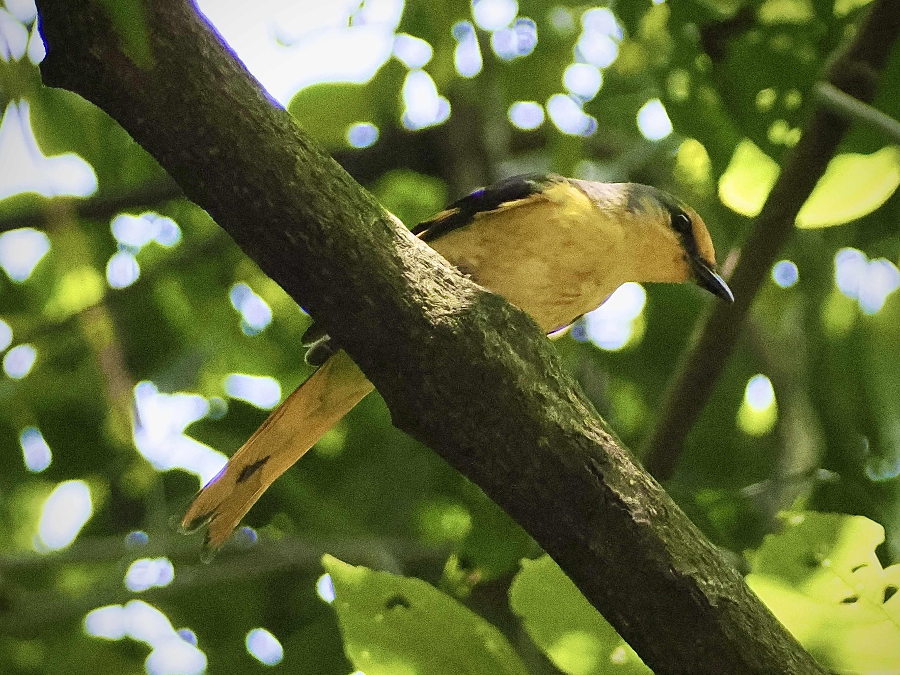

Scarlet Minivet
Pericrocotus speciosus
Order: Passeriformes
Family: Campephagidae

A slender, long-tailed bird. Occurs in flocks. Female is yellow with a greyish back and dark wings. Face is overall yellow with a dark eye stripe.
Order: Passeriformes
Family: Campephagidae

A slender, long-tailed bird. Occurs in flocks. Female is yellow with a greyish back and dark wings. Face is overall yellow with a dark eye stripe.
It seems some other species would like to follow minivet feeding flocks, such as Amur Paradise Flycatcher.